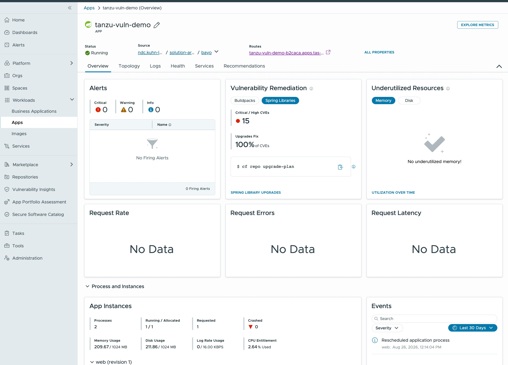
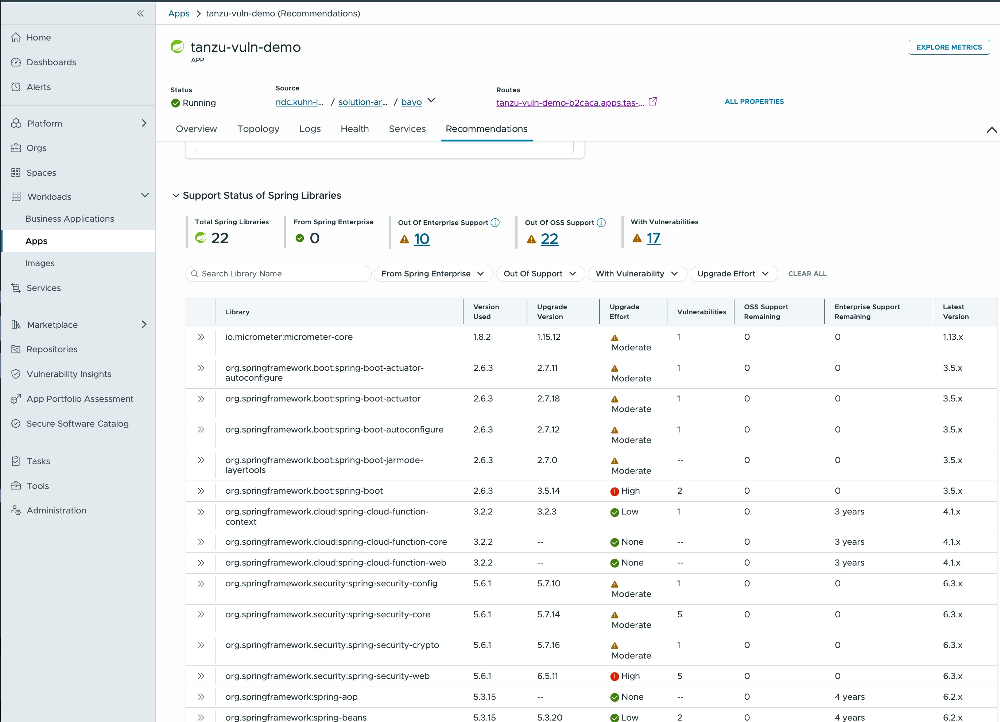
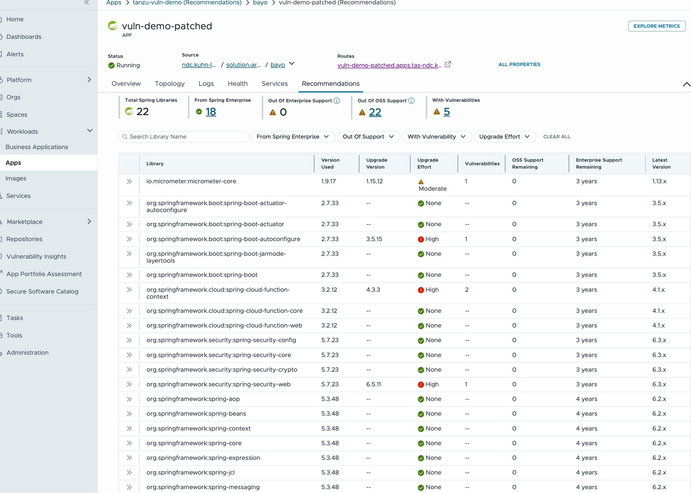
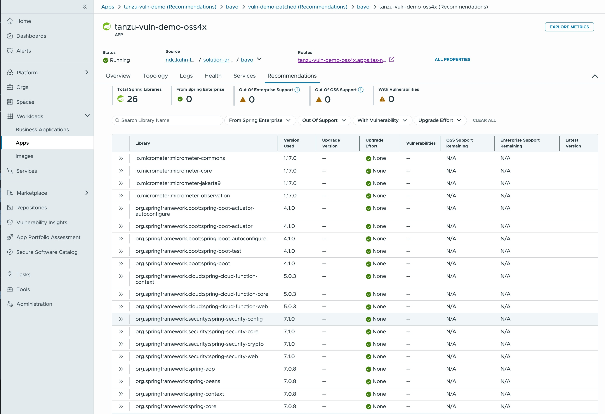

Tanzu Platform / Broadcom Spring Enterprise
Some patches don't exist in public.
A Spring Boot 2.6.3 app is running in production with 12 known CVEs, four of them critical. The release that closes the Spring‑owned ones is Boot 2.7.33 — and it is past open‑source end of life. It is not on Maven Central. It never will be.
Here is the same application, three times over: vulnerable, patched from the enterprise repository, and modernised to Boot 4.1 — all live, all in Tanzu Hub.
Hub: tanzu-hub.kuhn-labs.com · space to pause at any point
Act I · The application
It ships its own rap sheet.
The dashboard isn't a mock-up. It is generated from the versions pinned in pom.xml,
so what the page advertises is exactly what a scanner will find — and every card fires a
real request at the endpoint behind it.
Boot 2.6.3 · Framework 5.3.15 · Security 5.6.1 · Java 17
Act I · Tanzu Hub / tanzu-vuln-demo

Nobody had to configure a scan.
Hub reads the bill of materials off the running droplet. The app was pushed, and the Vulnerability Remediation card filled itself in.
Hub says upgrades fix 100% of them. It does not say those upgrades are reachable.
Act I · The end-of-life wall
Twenty-two Spring libraries. Twenty-two past OSS support.
Hub's own recommendation is spring-boot 2.6.3 → 2.7.x. Run it and Maven fails: the 2.7 patch line stopped publishing to Maven Central at OSS end of life. The fix exists. Your build just can't see it.
The choice becomes a framework-major rewrite or a risk-acceptance memo. Both are expensive. Both take quarters.

Act II · The remediation
One file. One line that matters.
Entitlement to Broadcom Spring Enterprise puts 2.7.33 back on the
shelf — a supported patch release for a line the open-source world has closed. Point Maven at
tanzu-maven, bump the parent, and the Boot BOM drags
patched Framework, Security, Jackson and H2 along behind it.
1 file changed. Zero lines of application code. No controller, no config class, no test touched.
Act II · Tanzu Hub / vuln-demo-patched
Same 22 libraries. Eighteen now carry a support contract.

The app reports 0.0 active exposure. Hub still flags five libraries against newer advisories — micrometer, actuator-autoconfigure, cloud-function-context, security-web. None are the criticals, each has an enterprise fix, and there are 3 years of support left to take it.
Act II · What you actually bought
Not a patch. A runway.
Hub reports remaining support per library, per source. Before the change, every number on this app was zero. After a one-line parent bump, the same libraries carry years.
The enterprise repository doesn't remove the need to modernise. It decouples the deadline from the breach — you upgrade on an engineering calendar instead of an incident bridge.
Act III · Spring App Advisor
Then spend the runway.
App Advisor walks the app across the majors — 2.6 → 2.7 → 3.x → 4.1 — one
build-passing step at a time, applying recipes for every breaking change on the way:
javax →
jakarta, the Security DSL rewrite,
the config-property moves.

That build's own page calls this “the hard way” — four majors, a new JDK, an application-code rewrite. App Advisor is what turns the hard way into an afternoon.
The same application, three times
Buy the time with the repo. Spend it with the Advisor.
| VulnerableBoot 2.6.3 · OSS | PatchedBoot 2.7.33 · Enterprise | ModernisedBoot 4.1.0 · OSS | |
|---|---|---|---|
| Critical / High CVEs | 15 | 0 | 0 |
| Libraries with vulnerabilities | 17 | 5 | 0 |
| From Spring Enterprise | 0 | 18 | 0 (not needed) |
| Out of Enterprise support | 10 | 0 | 0 |
| Out of OSS support | 22 | 22 | 0 |
| Support runway | none | 3–4 years | current |
| Application code changed | — | 0 lines | 0 hand-written |
| Time to get there | — | one pom.xml edit | one advisor run |
Broadcom Spring Enterprise · packages.broadcom.com/artifactory/tanzu-maven · press R to replay